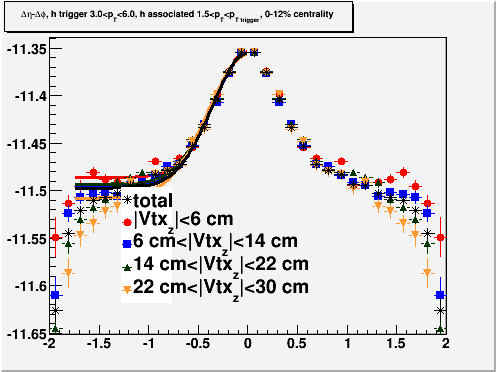
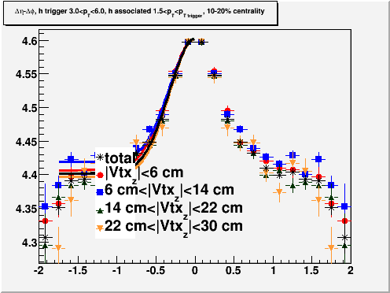
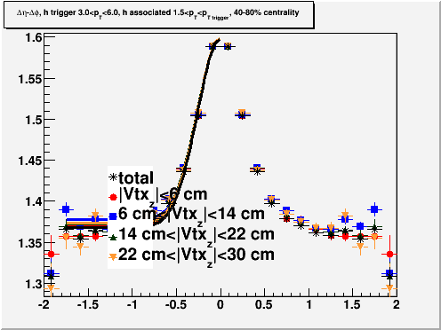

| 0-12% |
10-20% |
20-30% |
30-40% |
40-80% |
 |
 |
 |
||
| Yield error: -8.67% (statistical error on yield 1.7%) Width error: -5.9% (statistical error on width 1.3%) |
Yield error: 5.87% (statistical error on yield 3.1%) Width error: 3.0% (statistical error on width 2.5%) |
Yield error: 4.95% (statistical error on yield 3.1%) Width error: 1.0% (statistical error on width 2.6%) |